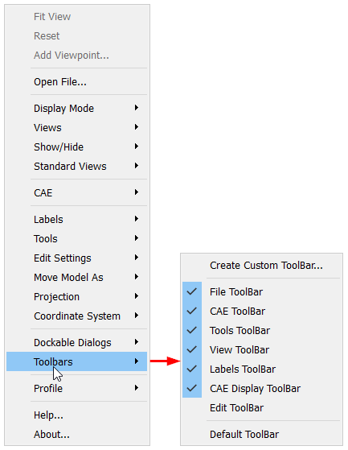
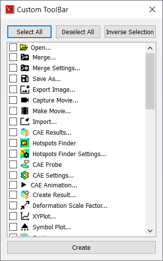
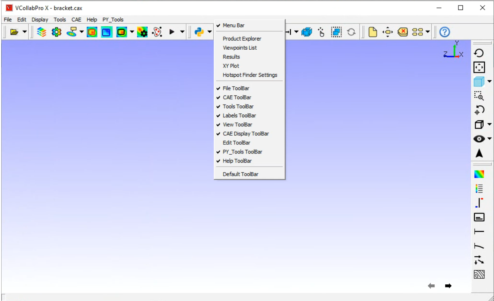
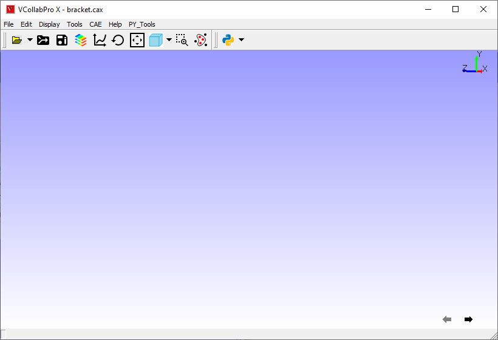

Custom Toolbar¶
This page explains how to customize tool bars. VCollab allows user to create one new toolbar and add commands to it.
File Toolbar
CAE Toolbar
View Toolbar
Labels Toolbar
Tools Toolbar
CAE Display Toolbar
Edit Toolbar
Custom Toolbar
Steps
Select Toolbars item in the right click context menu dropdown list.

User can find the interface for creating new custom toolbar.
Click ‘Create Custom Toolbar…’ option.
It pops up custom toolbar command list dialog.

Check the commands to be added to custom toolbar.
User can utilize the options, ‘Select All’, ‘Deselect All’ and ‘Inverse Selection’ options for quick selection.
Click Create button.
It hides all toolbars and places custom toolbar in the top of viewer by default.
User can dock the toolbars in all sides.
User can toggle the toolbar’s visibility, using either by viewer context menu or by toolbar-space context menu as below.

User can go back to usual toolbar visibility by selecting ‘Default Toolbar’ option in the context menu.
Clicking ‘Default Toolbar’ option hides Custom Toolbar.
User can show or hide any toolbar by checking or unchecking it individually.
Below is the image of application with custom toolbar.
